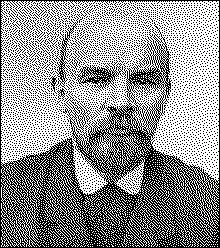

|
V. I. LENINSOCIALISM AND WAR
|  |
This is a collection of V. I. Lenin's three articles on war and peace. "Socialism and War" has been reprinted from the pamphlet under the same title published in English by the Foreign Languages Publishing House, Moscow, in 1950; "The War Programme of the Proletarian Revolution" from V. I. Lenin, Selected Works, English edition, FLPH, Moscow, 1952, Vol. I, Part 2; and "Bourgeois Pacifism and Socialist Pacifism" from V. I. Lenin, Selected Works, Lawrence and Wishart, London, 1936, Vol. V. A few stylistic changes have been made in the present collection.
The notes at the end of the book are largely taken from those given in the Chinese edition, published under the same title by the People's Publishing House, Peking, in July 1964. Some notes given in the English editions mentioned above have also been used.
|
Preface to the First (Foreign) Edition |
1 |
|
Preface to the Second Edition |
3 |
|
Chapter I. The Principles of Socialism and the War of
|
4 |
|
The Attitude of Socialists Towards Wars |
4 |
|
Chapter II. Classes and Parties in Russia |
28 |
|
The Bourgeoisie and the War |
28 |
|
Chapter III. The Restoration of the International |
37 |
|
The Method of the Social-Chauvinists and of the "Centre"
|
37 |
|
Chapter IV. The History of the Split and the Present
State |
47 |
|
The "Economists" and the Old Iskra (1894-1903) |
48 |
|
|
page 1
(THE ATTITUDE OF THE RUSSIAN
The war has been going on for a year already. Our Party defined its attitude towards it at its very beginning, in the Central Committee's manifesto that was drawn up in September 1914 and printed (after it had been sent to the members of the C.C. and to our Party's responsible representatives in Russia, and after their consent had been received) on November 1, 1914, in No. 33 of our Party's Central Organ, Sotsial-Demokrat.[2] Later, in No. 40 (March 29, 1915) were printed the resolutions of the Berne Conference[3] in which our principles and tactics were more precisely enunciated.
At the present time, in Russia, there is an obvious growth of revolutionary temper among the masses. In other countries, symptoms of the same phenomenon are observed everywhere, in spite of the suppression of the revolutionary strivings
page 2
of the proletariat by the majority of the official Social-Democratic parties, which have taken the side of their governments and their bourgeoisie. This state of things makes particularly urgent the publication of a pamphlet that sums up Social-Democratic tactics in relation to the war. Reprinting in full the above-mentioned Party documents, we provide them with brief explanations, endeavouring to take into account all the chief arguments in favour of bourgeois and of proletarian tactics that have been expressed in literature and at Party meetings.
page 3
This pamphlet was written in the summer of 1915, just before the Zimmerwald Conference.[4] It also appeared in German and French, and was reprinted in full in Norwegian in the organ of the Norwegian Social-Democratic youth league. The German edition of the pamphlet was secretly smuggled into Germany -- into Berlin, Leipzig, Bremen and other cities, where it was secretly distributed by supporters of the Zimmerwald Left and by the Karl Liebknecht group. The French edition was secretly printed in Paris and distributed there by the French Zimmerwaldists. The Russian edition reached Russia in a very limited quantity, and in Moscow was copied out by hand by workers.
We are now reprinting this pamphlet in full as a document. The reader must remember all the time that the pamphlet was written in August 1915. This must be remembered particularly in connection with those passages which refer to Russia: Russia at that time was still tsarist, Romanov Russia.
page 4
THE PRINCIPLES OF SOCIALISM
Socialists have always condemned war between nations as barbarous and brutal. But our attitude towards war is fundamentally different from that of the bourgeois pacifists (supporters and advocates of peace) and of the Anarchists. We differ from the former in that we understand the inevitable connection between wars and the class struggle within the country; we understand that war cannot be abolished unless classes are abolished and Socialism is created; and we also differ in that we fully regard civil wars, i.e., wars waged by the oppressed class against the oppressing class, slaves against slave-owners, serfs against land-owners, and wage workers against the bourgeoisie, as legitimate, progressive and necessary. We Marxists differ from both the pacifists and the Anarchists in that we deem it necessary historically (from the standpoint of Marx's dialectical materialism) to study each war separately. In history there have been numerous wars which, in spite of all the horrors, atrocities, distress and suffering that inevitably accompany all wars, were progressive, i.e., benefited the development of mankind by helping to destroy the exceptionally harmful and reactionary
page 5
institutions (for example, autocracy or serfdom), the most barbarous despotisms in Europe (Turkish and Russian). Therefore, it is necessary to examine the historically specific features of precisely the present war.
The Great French Revolution ushered in a new epoch in the history of mankind. From that time to the Paris Commune, from 1789 to 1871, one of the types of wars were wars of a bourgeois-progressive, national-liberating character. In other words, the chief content and historical significance of these wars were the overthrow of absolutism and feudalism, the undermining of these institutions, the overthrow of alien oppression. Therefore, those were progressive wars, and during such wars, all honest, revolutionary democrats, and also all Socialists, always sympathized with the success of that country (i.e., with that bourgeoisie), which had helped to overthrow, or sap, the most dangerous foundations of feudalism, absolutism and the oppression of other nations. For example, the revolutionary wars waged by France contained an element of plunder and conquest of alien territory by the French, but this does not in the least alter the fundamental historical significance of these wars, which destroyed and shattered feudalism and absolutism in the whole of old, serf-ridden Europe. In the Franco-Prussian war, Germany plundered France, but this does not alter the fundamental historical significance of this war, which liberated tens of millions of German people from feudal disintegration and
page 6
from the oppression of two despots, the Russian tsar and Napoleon III.
The epoch of 1789-1871 left deep traces and revolutionary memories. Before feudalism, absolutism and alien oppression were overthrown, the development of the proletarian struggle for Socialism was out of the question. When speaking of the legitimacy of "defensive" war in relation to the wars of such an epoch, Socialists always had in mind precisely these objects, which amounted to revolution against medievalism and serfdom. By "defensive" war Socialists always meant a "just " war in this sense (W. Liebknecht once expressed himself precisely in this way). Only in this sense have Socialists regarded, and now regard, wars "for the defence of the fatherland," or "defensive" wars, as legitimate, progressive and just. For example, if tomorrow, Morocco were to declare war on France, India on England, Persia or China on Russia, and so forth, those would be "just," "defensive" wars, irrespective of who attacked first; and every Socialist would sympathize with the victory of the operessed, dependent, unequal states against the oppressing, slave-owning, predatory "great" powers.
But picture to yourselves a slave-owner who owned 100 slaves warring against a slave-owner who owned 200 slaves for a more "just" distribution of slaves. Clearly, the application of the term "defensive" war, or war "for the defence of the fatherland," in such a case would be historically false, and in practice would be sheer deception of the common peo-
page 7
ple, of philistines, of ignorant people, by the astute slave-owners. Precisely in this way are the present-day imperialist bourgeoisie deceiving the peoples by means of "national" ideology and the term "defence of the fatherland" in the present war between slave-owners for fortifying and strengthening slavery.
Nearly everybody admits that the present war is an imperialist war, but in most cases this term is distorted or applied to one side, or a loophole is left for the assertion that this war may, after all, have a bourgeois-progressive, national liberating significance. Imperialism is the highest stage in the development of capitalism, reached only in the twentieth century. Capitalism now finds the old national states, without the formation of which it could not have overthrown feudalism, too tight for it. Capitalism has developed concentration to such a degree that whole branches of industry have been seized by syndicates, trusts and associations of capitalist billionaires, and almost the entire globe has been divided up among the "lords of capital," either in the form of colonies, or by enmeshing other countries in thousands of threads of financial exploitation. Free trade and competition have been superseded by the striving for monopoly, for the seizure of territory for the investment of capital, for the export of raw materials from them, and so forth. From the liberator of nations that capitalism was in the struggle against feudalism, imperialist capitalism has become the greatest oppressor of nations. Formerly progressive, capitalism has be
page 8
come reactionary; it has developed the forces of production to such a degree that mankind is faced with the alternative of going over to Socialism or of suffering years and even decades of armed struggle between the "great" powers for the artificial preservation of capitalism by means of colonies, monopolies, privileges and national oppression of every kind.
To explain the significance of imperialism, we will quote exact figures showing the division of the world among the so-called "great" (i.e., successful in great plunder) powers: [See p. 9 --Ed.] From this it is seen how most of the nations which fought at the head of others for freedom in 1789-1871, have now, after 1876, on the basis of highly developed and "overripe" capitalism, become the oppressors and enslavers of the majority of the populations and nations of the globe. From 1876 to 1914, six "great" powers grabbed 25 million sq. kilometres, i.e., an area two and a half times that of Europe! Six powers are enslaving over half a billion (523 million) inhabitants of colonies. For every four inhabitants of the "great" powers there are five inhabitants of "their" colonies. And everybody knows that colonies are conquered by fire and sword, that the populations of colonies are brutally treated, that they are exploited in a thousand ways (by exporting capital, concessions, etc., cheating when selling them goods, subordination to the authorities of the "ruling" nation, and
page 9
SOCIAL-DEMOCRATIC LABOUR PARTY
TOWARDS THE WAR)[1]
PREFACE TO THE FIRST (FOREIGN) EDITION
Printed in the 1918 edition of the pamphlet
AND THE WAR OF 1914-1915
THE ATTITUDE OF SOCIALISTS
TOWARDS WARS
IN MODERN TIMES
AND DEFENSIVE WAR
IMPERIALIST WAR
SLAVE-OWNERS FOR PRESERVING
AND FORTIFYING SLAVERY
|
|
C o l o n i e s |
Metropolises |
T o t a l | |||||
|
1876 |
1914 |
1914 | ||||||
|
Square |
Inhab- |
Square |
Inhab- |
Square |
Inhab- |
Square |
Inhab- | |
|
millions |
millions |
millions |
millions | |||||
|
England |
22.5 |
251.9 |
33.5 |
393.5 |
0.3 |
46.5 |
33.8 |
440.0 |
|
| ||||||||
|
Six "great" |
|
|
|
|
|
|
|
|
|
| ||||||||
|
Colonies belonging
not to |
|
|
|
|
| |||
|
T o t a l
|
105.9 |
1,367.1 | ||||||
|
| ||||||||
|
Other states and countries |
28.0 |
289.9 | ||||||
|
Entire globe (without polar regions) |
133.9 |
1,657.0 | ||||||
page 10
so on and so forth). The Anglo-French bourgeoisie are deceiving the people when they say that they are waging war for the freedom of nations and for Belgium; actually they are waging war for the purpose of retaining the colonies they have inordinately grabbed. The German imperialists would free Belgium, etc., at once if the British and French would agree "fairly" to share their colonies with them. The peculiarity of the situation lies in that in this war the fate of the colonies is being decided by war on the Continent. From the standpoint of bourgeois justice and national freedom (or the right of nations to existence), Germany would be absolutely right as against England and France, for she has been "done out" of colonies, her enemies are oppressing an immeasurably far larger number of nations than she is, and the Slavs who are oppressed by her ally Austria undoubtedly enjoy far more freedom than those in tsarist Russia, that real "prison of nations." But Germany is fighting not for the liberation, but for the oppression of nations. It is not the business of Socialists to help the younger and stronger robber (Germany) to rob the older and overgorged robbers. Socialists must take advantage of the struggle between the robbers to overthrow them all. To be able to do this, the Socialists must first of all tell the people the truth, namely, that this war is in a treble sense a war between slave-owners to fortify slavery. This is a war firstly, to fortify the enslavement of the colonies by means of a "fairer" distribution and subsequent more "concerted" exploitation of them; secondly, to fortify the oppression of other nations within the "great" powers, for both Austria and Russia (Russia more and much worse than Austria) maintain their rule only by such oppression, intensifying it by means of war; and thirdly, to fortify and prolong wage slavery, for the proletariat is
page 11
split up and suppressed, while the capitalists gain, making fortunes out of the war, aggravating national prejudices and intensifying reaction, which has raised its head in all countries, even in the freest and most republican.
This famous aphorism was uttered by one of the profoundest writers on the problems of war, Clausewitz. Marxists have always rightly regarded this thesis as the theoretical basis of views concerning the significance of every given war. It was precisely from this viewpoint that Marx and Engels always regarded different wars.
Apply this view to the present war. You will see that for decades, for almost half a century, the governments and the ruling classes of England, and France, and Germany, and Italy, and Austria, and Russia, pursued a polcy of plundering colonies, of oppressing other nations, of suppressing the working-class movement. It is this, and only this policy that is being continued in the present war. In particular, the policy of both Austria and Russia, in peace-time as, well as in war-time, is a policy of enslaving and not of Iiberating natons. In China, Persia, India and other dependent countries, on the contrary, we have seen during the past decades a policy of rousing tens and hundreds of millions of people to national life, of liberating them from the oppression of the reactionary "great" powers. A war on such a historical ground can even today be a bourgeois-progressive, national liberation war.
page 12
It is sufficient to glance at the present war from the view point that it is a continuation of the politics of the "great" powers, and of the principal classes within them, to see at once the howling anti-historicalness, falsity and hypocrisy of the view that the "defence of the fatherland" idea can be justified in the present war.
The favourite plea of the social-chauvinist triple (now quadruple) entente (in Russia, Plekhanov and Co.), is the example of Belgium. But this example goes against them. The German imperialists shamelessly violated the neutrality of Belgium, as belligerent states have done always and every where, trampling upon all treaties and obligations if necessary. Let us suppose that all the states interested in the observation of international treaties declared war on Germany with the demand for the liberation and indemnification of Belgium. In such a case, the sympathies of Socialists would, of course, be on the side of Germany's enemies. But the whole point is that the "triple (and quadruple) entente" is waging war not over Belgium: this is perfectly well known, and only hypocrites conceal this. England is grabbing Germany's colonies and Turkey; Russia is grabbing Galicia and Turkey, France wants Alsace-Lorraine and even the left bank of the Rhine; a treaty has been concluded with Italy for the division of the spoils (Albania, Asia Minor); bargaining is going on with Bulgaria and Rumania, also for the division of the spoils. In the present war waged by the present governments it is impossible to help Belgium without helping to strangle Austria or Turkey, etc.! How does "defence of the
page 13
fatherland" come in here? Herein, precisely, lies the specific feature of imperialist war, war between reactionary bourgeois, historically obsolete governments, waged for the purpose of oppressing other nations. Whoever justifies participation in the present war perpetuates imperialist oppression of nations. Whoever advocates taking advantage of the present embarrassments of the governments to fight for the social revolution champions the real freedom of really all nations, which is possible only under Socialism.
In Russia, capitalist imperialism of the latest type has fully revealed itself in the policy of tsarism towards Persia, Manchuria and Mongolia; but, in general, military and feudal imperialism predominates in Russia. In no country in the world is the majority of the population oppressed so much as it is in Russia; Great Russians constitute only 43 per cent of the population, i.e., less than half; all the rest are denied rights as aliens. Of the 170 million inhabitants of Russia, about 100 million are oppressed and denied rights. Tsarism is waging war to seize Galicia and finally to crush the liberties of the Ukrainians, to seize Armenia, Constantinople, etc. Tsarism regards the war as a means of diverting attention from the growth of discontent within the country and of suppressing the growing revolutionary movement. At the present time, for every two Great Russians in Russia there are from two to three rightless "aliens": tsarism is striving by means of the war to increase the number of nations oppressed by Russia, to perpetuate this oppression and thereby undermine the struggle for freedom which the Great Rus-
page 14
sians themselves are waging. The possibility of oppressing and robbing other nations perpetuates economic stagnation, because, often, the source of income is not the development of productive forces, but the semi-feudal exploitation of "aliens." Thus, on the part of Russia, the war is distinguished for its profoundly reactionary and anti-liberating character.
Social-chauvinism is advocacy of the idea of "defence of the fatherland" in the present war. Further, this idea logically leads to the abandonment of the class struggle during the war, to voting war credits, etc. Actually, the social chauvinists are pursuing an anti-proletarian, bourgeois policy; for actually, they are championing not "defence of the fatherland" in the sense of fighting foreign oppression, but the "right" of one or other of the "great" powers to plunder colonies and to oppress other nations. The social-chauvinists repeat the bourgeois deception of the people that the war is being waged to protect the freedom and existence of nations, and thereby they go over to the side of the bourgeoisie against the proletariat. In the category of social-chauvinists are those who justify and embellish the governments and bourgeoisie of one of the belligerent groups of powers, as well as those who, like Kautsky, argue that the Socialists of all the belligerent powers have an equal right to "defend the fatherland." Social-chauvinism, being actually defence of the privileges, advantages, robbery and violence of one's "own" (or every) imperialist bourgeoisie, is the utter betrayal of all socialist convictions and of the decision of the Basle International Socialist Congress.
page 15
The manifesto on war that was unanimously adopted in Basle in 1912 had in view the very war between England and Germany and their present allies that broke out in 1914. The manifesto openly declares that no plea of the interests of the people can justify such a war, waged "for the sake of the profits of the capitalists" and "the ambitions of dynasties" on the basis of the imperialist, predatory policy of the great powers. The manifesto openly declares that war is dangerous "for the governments" (all without exception), notes their fear of "a proletarian revolution," and very definitely points to the example of the Commune of 1871, and of October-December 1905, i.e., to the examples of revolution and civil war. Thus, the Basle Manifesto lays down, precisely for the present war, the tactics of revolutionary struggle by the workers on an international scale against their governments, the tactics of proletarian revolution. The Basle Manifesto repeats the statement in the Stuttgart resolution that, in the event of war breaking out, Socialists must take advantage of the "economic and political crisis" it will cause, to "hasten the downfall of capitalism," i.e., to take advantage of the governments' embarrassments and the anger of the masses, caused by the war, for the socialist revolution.
The policy of the social-chauvinists, their justification of the war from the bourgeois-liberation standpoint, their sanctioning of "defence of the fatherland," voting credits, entering cabinets, and so on and so forth, is downright treachery to Socialism, which can be explained only, as we will see lower down, by the victory of opportunism and of the national-liberal labour policy in the majority of European parties.
page 16
The Russian social-chauvinists (headed by Plekhanov), refer to Marx's tactics in the war of 1870; the German (of the type of Lensch, David and Co.) to Engels' statement in 1891 that in the event of war against Russia and France together, it would be the duty of the German Socialists to defend their fatherland; and lastly, the social-chauvinists of the Kautsky type, who want to reconcile and legitimatize international chauvinism, refer to the fact that Marx and Engels, while condemning war, nevertheless, constantly, from 1854-1855 to 1870-1871 and 1876-1877, took the side of one or another belligerent state once war had broken out.
All these references are outrageous distortions of the views of Marx and Engels in the interest of the bourgeoisie and the opportunists, in just the same way as the writings of the Anarchists Guillaume and Co. distort the views of Marx and Engels in justification of anarchism. The war of 1870-1871 was a historically progressive war on the part of Germany until Napoleon III was defeated; for the latter, together with the tsar, had oppressed Germany for many years, keeping her in a state of feudal disintegration. But as soon as the war developed into the plunder of France (the annexation of Alsace and Lorraine), Marx and Engels emphatically condemned the Germans. And even at the beginning of that war Marx and Engels approved of the refusal of Bebel and Liebknecht to vote for credits and advised the Social-Democrats not to merge with the bourgeoisie, but to uphold the independent class interests of the proletariat. To apply the appraisal of this bourgeois-progressive and national-liberating war to the present imperialist war means mocking at truth.
page 17
The same applies with still greater force to the war of 1854-1855, and to all the wars of the nineteenth century, when there was no modern imperialism, no ripe objective conditions for Socialism, and no mass Socialist parties in any of the belligerent countries, i.e., none of the conditions from which the Basle Manifesto deduced the tactics of "proletarian revolution" in connection with a war between the great powers.
Whoever refers today to Marx's attitude towards the wars of the epoch of the progressive bourgeoisie and forgets Marx's statement that "the workers have no fatherland," a statement that applies precisely to the epoch of the reactionary, obsolete bourgeoisie, to the epoch of the socialist revolution, shamelessly distorts Marx and substitutes the bourgeois for the socialist point of view.
The Socialists of all the world solemnly declared in Basle, in 1912, that they regarded the impending war in Europe as the "criminal" and most reactionary affair of all the governments, which must hasten the downfall of capitalism by inevitably calling forth a revolution against it. The war came, the crisis came. Instead of revolutionary tactics, the majority of the Social-Democratic parties conducted reactionary tactics, went over to the side of their respective governments and bourgeoisie. This betrayal of Socialism signifies the collapse of the Second (1889-1914) International, and we must understand what caused this collapse, what brought social-chauvinism into being, what gave it strength.
page 18
During the whole epoch of the Second International, a struggle raged everywhere in the Social-Demoaatic parties between the revolutionary and the opportunist wings. In a number of countries a split has taken place along this line (England, Italy, Holland, Bulgaria). Not a single Marxist has any doubt that opportunism expresses bourgeois policy within the working-class movement, expresses the interests of the petty bourgeoisie and the alliance of a tiny section of bourgeoisified workers with "their" bourgeoisie against the interests of the proletarian masses, the oppressed masses.
The objective conditions of the end of the nineteenth century exceptionally intensified opportunism, converted the utilization of bourgeois legality into subservience to it, created a tiny stratum of bureaucrats and aristocrats within the working class, and drew into the ranks of the Social-Democratic parties numerous petty-bourgeois "fellow travelers."
The war accelerated this development and transformed opportunism into social-chauvinism, transformed the secret alliance between the opportunists and the bourgeoisie into an open one. Simultaneously, the military authorities everywhere have introduced martial law and have muzzled the mass of the workers, whose old leaders have nearly all gone over to the bourgeoisie.
Opportunism and sociaI-chauvinism have the same economic basis: the interests of a tiny stratum of privileged workers and of the petty bourgeoisie who are defending their privileged position, their "right" to crumbs of the profits "their" national bourgeoisie obtain from robbing other na-
page 19
tions, from the advantages of their position as the ruling nation, etc.
Opportunism and social-chauvinism have the same ideological-political content: collaboration of classes instead of class struggle, renunciation of revolutionary methods of struggle, helping one's "own" government in its embarrassed situation instead of taking advantage of these embarrassments for revolution. If we take all the European countries as a whole, if we pay attention not to individuals (even the most authoritative), we will find that it is the opportunist trend that has become the chief bulwark of social-chauvinism, whereas from the camp of the revolutionaries, more or less consistent protests against it are heard nearly everywhere. And if we take, for example, the grouping of trends at the Stuttgart International Socialist Congress in 1907,[7] we will find that international Marxism was opposed to imperialism, while international opportunism was in favour of it already at that time.
In the past epoch, before the war, although opportunism was often regarded as a "deviationist," "extremist" part of the Social-Democratic Party, it was nevertheless regarded as a legitimate part. The war has shown that this cannot be so in [the -- DJR] future. Opportunism has "matured," is now playing to the full its role as emissary of the bourgeois in the
page 20
working-class movement. Unity with the opportunists has become sheer hypocrisy, an example of which we see in the German Social-Democratic Party. On all important occasions (for example, the voting on August 4),[8] the opportunists come forward with an ultimatum, which they carry out with the aid of their numerous connections with the bourgeoisie, of their majority on the executives of the trade unions, etc. Unity with the opportunists actually means today, subordinating the working class to "its" national bourgeoisie, alliance with it for the purpose of oppressing other nations and of fighting for great-power privileges, it means splitting the revolutionary proletariat in all countries.
Hard as the struggle may be, in individual cases, against the opportunists who predominate in many organizations, peculiar as the process of purging the workers' parties of opportunists may be in individual countries, this process is inevitable and fruitful. Reformist Socialism is dying; regenerated Socialism "will be revolutionary, uncompromising and insurrectionary," to use the apt expression of the French Socialist Paul Golay.
Kautsky, the biggest authority in the Second International, gives us a highly typical and glaring example of how the verbal recognition of Marxism has led actually to its conversion into "Struveism,"[9] or into ''Brentanoism.''[10] We see this also from the example of Plekhanov. By means of obvious sophistry they rob Marxism of its revolutionary living spirit; to recognize everything in Marxism except revolutionary methods of struggle, the preaching of and preparation for such
page 21
methods, and the training of the masses precisely in this direction. Kautsky, in an unprincipled fashion, "reconciles" the fundamental idea of social-chauvinism, recognition of defence of the fatherland in the present war, with a diplomatic, sham concession to the Lefts in the shape of abstaining from voting credits, the verbal claim of being in the opposition, etc. Kautsky, who in 1909 wrote a whole book on the approaching epoch of revolutions and on the connection between war and revolutions, Kautsky, who in 1912 signed the Basle Manifesto on taking revolutionary advantage of the impending war, is now, in every way, justifying and embellishing social-chauvinism and, like Plekhanov, joins the bourgeoisie in ridiculing all thought of revolution, all steps towards direct revolutionary struggle.
The working class cannot play its world-revolutionary role unless it wages a ruthless struggle against this renegacy, spinelessness, subservience to opportunism and unexampled vulgarization of the theories of Marxism. Kautskyism is not a fortuity, but a social product of the contradictions within the Second International, a combination of loyalty to Marxism in words and subordination to opportunism in deeds.
This fundamental falseness of "Kautskyism" manifests it self in different ways in different countries. In Holland, Roland-Holst, while rejecting the idea of defending the fatherland, defends unity with the opportunists' party. In Russia, Trotsky, while also rejecting this idea, also defends unity with the opportunist and chauvinist Nesha Zarya group. In Rumania, Rakovsky, while declaring war on opportunism as being responsible for the collapse of the International, is at the same time ready to recognize the legitimacy of the idea of defending the fatherland. All this is a manifestation of
page 22
the evil which the Dutch Marxists (Gorter and Pannekoek) have called "passive radicalism," and which amounts to substituting for Marxism eclecticism in theory and servility to, or impotence in the face of, opportunism in practice.
The war has undoubtedly created a most acute crisis and has increased the distress of the masses to an incredible de gree. The reactionary character of this war, and the shameless lies told by the bourgeoisie of all countries in covering up their predatory aims with "national" ideology, are inevitably creating, on the basis of an objectively revolutionary situation, revolutionary moods among the masses. It is our duty to help the masses to become conscious of these moods, to deepen and formulate them. This task is correctly exrpressed only by the slogan: convert the imperialist war into civil war; and all consistently waged class struggles during the war, all seriously conducted "mass action" tactics inevitably lead to this. It is impossible to foretell whether a powerful revolutionary movement will flare up during the dirst or the second war of the great poers, whether during or after it; in any case, our bounden duty is systematicallyand undeviatingly to work precisely in this direction.
The Basle Manifesto refers directly to the example set by the Paris Commune, i.e., to the conversion of a war between governments into civil war. Half a century ago, the proletariat was too weak; the objective conditions for Socialism had not yet ripened; there could be no coordination and
page 23
cooperation between the revolutionary movements in all the belligerent countries; the "national ideology" (the traditions of 1792), with which a section of the Parisian workers were imbued, was their petty-bourgeois weakness, which Marx noted at the time, and was one of the causes of the fall of the Commune. Half a century after it, the conditions that weakened the revolution at that time have passed away, and it is unpardonable for a Socialist at the present time to resign himself to the abandonment of activities precisely in the spirit of the Paris Communards.
The bourgeois newspapers of all the belligerent countries have reported cases of fraternization between the soldiers of the belligerent nations even in the trenches. And the issue by the military authorities (of Germany, England) of draconic orders against such fraternization proved that the governments and the bourgeoisie attached grave importance to it. The fact that such cases of fraternization have been possible even when opportunism reigns supreme in the top ranks of the Social-Democratic parties of Western Europe, and when social-chauvinism is supported by the entire Social-Democratic press and by all the authorities of the Second International, shows us how possible it would be to shorten the present criminal, reactionary and slave-owners' war and to organize a revolutionary international movement, if systematic work were conducted in this direction, if only by the Left-wing Socialists in all the belligerent countries.
page 24
The most prominent Anarchists all over the world, no less than the opportunists, have disgraced themselves with social-chauvinism (in the spirit of Plekhanov and Kautsky) in this war. One of the useful results of this war will undoubtedly be that it will kill both anarchism and opportunism.
While under no circumstances or conditions refraining from utilizing all legal possibilities, however small, for the purpose of organizing the masses and of preaching Socialism, the Social-Democratic parties must break with subservience to legality. "You shoot first, Messieurs the Bourgeoisie,''[11] wrote Engels, hinting precisely at civil war and at the necessity of our violating legality after the bourgeoisie had violated it. The crisis has shown that the bourgeoisie violate it in all countries, even the freest, and that it is impossible to lead the masses to revolution unless an underground organization is set up for the purpose of advocating, discussing, appraising and preparing revolutionary methods of struggle. In Germany, for example, all the honest things that Socialists are doing, are being done in spite of despicable opportunism and hypocritical "Kautskyism," and are being done secretly. In England, people are sent to penal servitude for printing appeals against joining the army.
To regard the repudiation of underground methods of propaganda, and ridiculing the latter in the legally published prcss, as being compatible with membership of the Social Democratic Party is treachery to Socialism.
page 25
Both the advocates of victory for their governments in the present war and the advocates of the slogan "neither victory nor defeat," equally take the standpoint of social-chauvinism. A revolutionary class cannot but wish for the defeat of its government in a reactionary war, cannot fail to see that its military reverses facilitate its overthrow. Only a bourgeois who believes that a war started by the governments must necessarily end as a war between governments and wants it to end as such, can regard as "ridiculous" and "absurd" the idea that the Socialists of all the belligerent countries should wish for the of all "their" governments and express this wish. On the contrary, it is precisely a statement of this kind that would conform to the cherished thoughts of every class-conscious worker, and would be in line with our activities towards converting the imperialist war into civil war.
Undoubtedly, the serious anti-war agitation that is being conductcd by a section of the British, German and Russian Socialists has "wcakened the military power" of the respec tive governments, but such agitation stands to the credit of the Socialists. Socialists must explain to the masses that they have no other road of salvation except the revolutionary overthrow of "their" governments, and that advantage must be taken of these governments' embarrassments in the present war precisely for this purpose.
The sentiments of the masses in favour of peace often express incipient protest, anger and consciousness of the reac-
page 26
tionary character of the war. It is the duty of all Social-Democrats to utilize these sentiments. They will take a most ardent part in every movement and in every demonstration on this ground; but they will not deceive the people by conceding the idea that peace without annexations, without the oppression of nations, without plunder, without the germs of new wars among the present governments and ruling classes is possible in the absence of a revolutionary movement. Such a deception of the people would merely play into the hands of the secret diplomacy of the belligerent governments and facilitate their counter-revolutionary plans. Whoever wants a lasting democratic peace must be in favour of civil war against the governments and the bourgeoisie.
The most widespread deception of the people perpetrated by the bourgeoisie in the present war is the concealment of its predatory aims with "national-liberation" ideology. The English promise the liberation of Belgium, the Germans of Poland, etc. Actuallyj as we have seen, this is a war waged by the oppressors of the majority of the nations of the world for the purpose of fortifying and expanding such oppression.
Socialists cannot achieve their great aim without fighting against all oppression of nations. Therefore, they must without fail demand that the Social-Democratic parties of oppressing countries (especially of the so-called "great" powers) should recognize and champion the right of oppressed nations to self-determination, precisely in the political sense of the term, i.e., the right to political secession. The So-
page 27
cialist of a ruling or colony-owning nation who fails to champion this right is a chauvinist.
The championing of this right, far from encouraging the formation of small states, leads, on the contrary, to the freer, fearless and therefore wider and more widespread formation of very big states and federations of states, which are more beneficial for the masses and more fully in keeping with economic development.
The Socialists of oppressed nations must, in their turn unfailingly fight for the complete (including organizational) unity of the workers of the oppressed and oppressing nationalities. The idea of the juridical separation of one nation from another (so-called "cultural-national autonomy" advocated by Bauer and Renner) is reactionary.
Imperialism is the epoch of the constantly increasing oppression of the nations of the world by a handful of "great" powers and, therefore, it is impossible to fight for the socialist internationaI revolution against imperialism unless the right of nations to self-determination is recognized. "No nation can be free if it oppresses other nations" (Marx and Engels). A proletariat that tolerates the slightest violence by "its" nation against other nations cannot be a socialist proletariat.
page 28
CLASSES AND PARTIES IN RUSSIA
In one respect, the Russian government has not lagged behind its European confrères; like them, it has succeeded in deceiving "its" people on a grand scale. A huge, monstrous machine of falsehood and cunning was set going in Russia too for the purpose of infecting the masses with chauvinism, of creating the impression that the tsarist government is waging a "just" war, that it is disinterestedly defending its "brother Slavs," etc.
The landlord class and the upper stratum of the commercial and industrial bourgeoisie ardently supported the tsarist government's bellicose policy. They are rightly expecting enormous material gains and privileges for themselves out of the partition of the Turkish and the Austrian legacy. A whole series of their congresses already have a foretaste of the profits that would flow into their pockets if the tsarist army were victorious. Moreover, the reactionaries are very well aware that if anything can postpone the downfall of the Romanov monarchy and delay the new revolution in Russia, it can only be a foreign war that ends in victory for the tsar.
Broad strata of the urban "middle" bourgeoisie, of the bourgeois intelligentsia, professional people, etc., were also
page 29
infected with chauvinism -- at all events at the beginning of the war. The Cadets -- the party of the Russian liberal bourgeoisie -- wholly and unreservedly supported the tsarist government. In the sphere of foreign policy the Cadets have long been a government party. Pan-Slavism -- with the aid of which tsarist diplomacy has more than once carried out its grand political swindles -- has become the official ideology of the Cadets. Russian liberalism has degenerated into national liberalism. It is vying in patriotism with the Black Hindreds; it always willingly votes for militarism, na valism, etc. In the camp of Russian liberalism, approximately the same thing is observed as was seen in the 70's in Germany when "free-thinking" liberalism decayed and from it arose a national-liberal party. The Russian liberal bourgeoisie has definitely taken the path of counter-revolution. The point of view of the R.S.D.L.P. on this question has been fully confirmed. Life has shattered the view held by our opportunists that Russian liberalism is still a motive force of the revolution in Russia.
Among the peasantry, the ruling clique, with the aid of the bourgeois press, the clergy, etc., also succeeded in rousing chauvinist sentiments. But, as the soldiers return from the field of slaughter, sentiment in the rural districts will undoubtedly turn against the tsarist monarchy. The bourgeois-democratic parties that come in contact with the peasantry failed to withstand the chauvinist wave. The Trudovik party in the State Duma refused to vote for war credits; but through the mouth of its leader Kerensky it made a "patriotic" declaration which played extremely well into the hands of the monarchy. The entire legally published press of the "Narodniks" in general, trailed behind the liberals. Even the Left-wing of bourgeois democracy -- the
page 30
so-called Socialist-Revolutionary Party, which is affiliated to the International Socialist Bureau -- floated in the same stream. Mr. Rubanovich, that party's representative on the I.S.B., comes out as an open social-chauvinist. Half of this party's delegates at the London Conference of "Entente" Socialists voted for a chauvinist resolution (while the other half abstained from voting). In the illegally published press of the Socialist-Revolutionaries (the newspaper Novosti[12] and others) chauvinists predominate. The revolutionaries "from bourgeois circles," i.e., the bourgeois revolutionaries not connected with the working class, have suffered utter bankruptcy in this war. The sad fate of Kropotkin, Burtsev and Rubanovich is extremely significant.
The only class in Russia that they did not succeed in infecting with chauvinism is the proletariat. Only the most ignorant strata of the workers were involved in the few excesses that occurred at the beginning of the war. The part played by workers in the Moscow anti-German riots was greatly exaggerated. In general, and on the whole, the working class of Russia proved to be immune to chauvinism.
This is to be explained by the revolutionary situation in the country and by the general conditions of life of the Russian proletariat.
The years 1912-1914 marked the beginning of a new, grand revolutionary upswing in Russia. We again witnessed a great strike movement such as the world has not known. The number involved in the mass revolutionary strike in 1913 was, at the very lowest estimation, one and a half
page 31
million, and in 1914 it rose above two million and drew near to the level of 1905. On the eve of the war, in St. Petersburg, things had already developed to the first barricade battles.
The underground Russian Social-Democratic Labour Party performed its duty to the International to the full. The banner of internationalism did not falter in its hands. Our Party had broken organizationally with the opportunist groups and elements long ago; its feet were not weighted with the fetters of opportunism and of "legalism at any price," and this circumstance helped it to perform its revolutionary duty -- just as the break-away from Bissolati's opportunist party helped the Italian comrades too.
The general situation in our country is inimical to the efflorescence of "socialist" opportunism among the masses of the workers. In Russia we see a whole series of shades of opportunism and reformism among the intelligentsia, the petty bourgeoisie, etc.; but it constitutes an insignificant minority among the politically active strata of the workers. The privileged stratum of workers and office employees in our country is very weak. The fetishism of legality could not be created here. The Liquidators (the party of the opportunists led by Axelrod, Potressov, Cherevanin, Maslov, and others) found no serious support among the masses of the workers before the war. The elections to the Fourth State Duma resulted in the return of all the six anti-liquidator worker deputies. The circulation of and collection of funds for the legally published workers' press in Petrograd and Moscow have proved irrefutably that four-fifths of the class-conscious workers are opposed to opportunism and liquidationism.
page 32
Since the beginning of the war the tsarist government has arrested and exiled thousands and thousands of advanced workers, members of our underground R.S.D.L.P. This circumstance, together with the introduction of martial law in the country, the suppression of our newspapers, and so forth, has retarded the movement. But for all that, our Party is continuing its underground revolutionary activities. In Petrograd, the committee of our Party is publishing the underground newspaper Proletarsky Golos.[13]
Articles from the Central Organ Sotsial-Demokrat, published abroad, are reprinted in Petrograd and sent out to the provinces. Manifestoes are secretly printed and circulated even in soldiers' barracks. In various secluded places outside the city, secret workers' meetings are held. Lately big strikes of metal workers have begun in Petrograd. In connection with these strikes our Petrograd Committee has issued several appeals to the workers.
In 1913 a split occurred among the Social-Democratic deputies in the State Duma. On one side were the seven supporters of opportunism led by Chkheidze. They were elected for the seven non-proletarian gubernias* where the workers numbered 214,000. On the other side were six deputies, all from workers' curiae, elected for the most industrialized centres in Russia, in which the workers numbered 1,008,000.
The chief issue in the split was: the tactics of revolutionary Marxism or the tactics of opportunist reformism? In
page 33
practice, the disagreement manifested itself mainly in the sphere of work outside of parliament among the masses. In Russia this work had to be conducted secretly if those conducting it wanted to remain on revolutionary ground. The Chkheidze group remained a faithful ally of the Liquidators who repudiated underground work, and defended them in all talks with the workers, at all meetings. Hence the split. The six deputies formed the R.S.D.L. group. The year's work has shown irrefutably that this is the group that the overwhelming majority of the Russian workers supports.
On the outbreak of the war the disagreement stood out in glaring relief. The Chkheidze group confined itself to parliamentary action. It did not vote for credits, for had it done so it would have roused against itself a storm of indignation among the workers. (We have seen that in Russia even the petty-bourgeois Trudoviki did not vote for credits); but it did not utter a protest against social-chauvinism either.
The R.S.D.L. group, expressing the political line of our Party, acted differently. It carried into the very depths of the working class a protest against the war; it conducted anti-imperialist propaganda among the broad masses of the Russian proletarians.
And it met with a very sympathetic response among the workers -- which frightened the government and compelled it, in flagrant violation of its own laws, to arrest our comrades, the deputies, and to sentence them to lifelong exile in Siberia. In its very first official announcement of the arrest of our comrades the tsarist government wrote:
"An entirely exceptional position in this respect was taken by some members of Social-Democratic societies, the object of whose activities was to shake the military might of Russia
page 34
by agitating against the war by means of underground appeals and verbal propaganda."
In response to Vandervelde's well-known appeal "tem porarily" to stop the struggle against tsarism -- it has now become known from the evidence of Prince Kudashev, the tsar's envoy in Belgium, that Vandervelde did not draw up this appeal alone, but in collaboration with the above mentioned tsar's envoy -- only our Party, through its Central Committee, replied in the negative. The guiding centre of the Liquidators agreed with Vandervelde and officially stated in the press that "in its activities it will not counteract the war."
The tsarist government's primary charge against our comrades, the deputies, was that they propagated this negative answer to Vandervelde among the workers.
At the trial, the tsarist Prosecutor, Mr. Nenarokomov, set up the German and French Socialists as examples for our comrades. "The German Social-Democrats," he said, "voted for the war credits and proved to be the friends of the government. That is how the German Social-Democrats acted, but the dismal knights of Russian Social-Democracy did not act in this way. . . . The Socialists of Belgium and France unanimously forgot their quarrels with other classes, forgot party strife and unhesitatingly rallied round the flag." But the members of the R.S.D.L. group, obeying the instructions of the Central Committee of the Party, did not act in this way, he said. . . .
The trial unfolded an imposing picture of the extensive, underground anti-war agitation our Party was conducting among the masses of the proletariat. It goes without saying that the tsarist court did not by a very long way "reveal" all the activities our comrades were conducting in this sphere;
page 35
but even what was revealed showed how much had been done within the short space of a few months. At the trial the secret manifestoes issued by our groups and committees against the war and for international tactics were read. Threads stretched from the class-conscious workers all over Russia to the members of the R.S.D.L. group, and the latter did all in its power to help the workers to appraise the war from the standpoint of Marxism.
Comrade Muranov, the deputy of the workers of the Kharkov Gubernia, said at the trial:
"Understanding that the people did not send me into the State Duma for the purpose of wearing out the seat of a Duma armchair, I travelled about the country to ascertain the mood of the working class." He admitted at the trial that he took upon himself the function of a secret agitator of our Party, that in the Urals he organized a workers' committee at the Verkhneisetsky Works, and in other places. The trial showed that after the war broke out members of the R.S.D.L. group travelled through almost the whole of Russia for propaganda purposes, that Muranov, Petrovsky, Badayev and others arranged numerous workers' meetings, at which anti-war resolutions were passed, and so forth.
The tsarist government threatened the accused with capital punishment. Owing to this, not all of them behaved at the actual trial as bravely as Comrade Muranov. They tried to make it difficult for the tsarist prosecutors to secure their conviction. The Russian social-chauvinists are now meanly utilizing this to obscure the essence of the question: what kind of parliamentarism does the working class need?
Parliamentarism is recognized by Sudekum and Heine, Sembat and Vaillant, Bissolati and Mussolini, Chkheidze and Plekhanov, and parliamentarism is recognized by our
page 36
comrades in the R.S.D.L. Duma group; it is recognized by the Bulgarian and Italian comrades who have broken with the chauvinists. There are different kinds of parliamentarism. Some utilize the parliamentary arena in order to win the favour of their governments, or, at best, to wash their hands of everythmg, like the Chkheidze group. Others utilize parliamentarism in order to remain revolutionary to the end, to perform their duty as Socialists and internationalists even under the most difficult circumstances. The parliamentary activities of some bring them into ministerial seats; the parliamentary activities of others bring them -- to prison, to exile, to penal servitude. Some serve the bourgeoisie, others -- the proletariat. Some are social-imperialists. Others are revolutionary Marxists.
page 37
THE RESTORATION
How should the International be restored? But first, a few words about how the International should not be restored.
Oh, the social-chauvinists of all countries are big "internationalists"! Since the very beginning of the war they have been burdened with care for the International. On the one hand, they assure us that the talk about the collapse of the International is "exaggerated." Actually, nothing exceptional has occurred. Listen to Kautsky: simply, the International is a "peacetime instrument"; naturally, this instrument was found to be somewhat not up to the mark in wartime. On the other hand, the social-chauvinists of all countries have found a very simple -- and chiefly, an international -- way out of the situation that has arisen. A simple way out: it is only necessary to wait until the war ends; but until the war ends the Socialists of each country must defend their "fatherland" and support "their" government; when the war ends -- mutual "amnesty," admission that everybody was right, that in peacetime we live like brothers, but in wartime we
page 38
-- on the basis of such and such resolutions -- call upon the German workers to exterminate their French brothers, and vice versa.
On this Kautsky and Plekhanov and Victor Adler and Heine are equally agreed. Victor Adler writes that "when we have passed through this hard time, our first duty will be to refrain from pointing to the mote in each other's eye." Kautsky asserts that "up till now no voices of serious Socialists have been heard from any side that rouse apprehensions" concerning the fate of the International. Plekhanov says that "it is unpleasant to grasp the hands" (of the German Social-Democrats) "that reek of the blood of the innocently killed." But he at once goes on to propose an "amnesty": "here it will be quite appropriate" he writes, "to subordinate the heart to the mind. For the sake of the great cause, the International will have to take into consideration even belated remorse." Heine, in Sozialistische Monatshefte describes Vandervelde's behaviour as "courageous and proud," and sets him up as an example for the German Lefts.
In short, when the war ends, appoint a commission consisting of Kautsky and Plekhanov, Vandervelde and Adler and a "unanimous" resolution in the spirit of mutual amnesty will be drawn up in a trice. The dispute will be safely covered up. Instead of helping the workers to understand what has occurred, they will deceive them with sham, paper "unity." The amalgamation of the social-chauvinists and hypocrites of all countries will be described as the restoration of the International.
We must not conceal from ourselves the fact that the danger of such a "restoration" is very great. The social chauvinists of all countries are equally interested in it. All of them are equally unwilling that the masses of the workers
page 39
themselves should try to grasp the issue: Socialism or nationalism? All of them are equally interested in covering up each other's sins. None of them is able to propose anything except what is proposed by that virtuoso in "international" hypocrisy, Kautsky.
And yet, this danger is scarcely realized. During the year of war we have witnessed a number of attempts to restore international connections. We will not speak of the conferences in London and Vienna, at which downright chauvinists assembled to help the General Staffs and the bourgeoisie of their "fatherlands." We have in mind the conferences in Lugano[14] and Copenhagen,[15] the International Women's Conference,[16] and the International Youth Conference.[17] These assemblies were inspired by the best wishes. But they totally failed to see the above-mentioned danger. They did not lay down a fighting line for internationalists. They did not point out to the proletariat the danger that threatens it from the social-chauvinists' method of "restoring" the International. At best, they confined themselves to repeating the old resolutions without indicating to the workers that unless a struggle is waged against the social-chauvinists, the cause of Socialism is hopeless. At best they marked time.
There can be no doubt whatever that what interests all internationalists most is the state of affairs among the German Social-Democratic opposition. Official German Social-Democracy, which was the strongest and the leading party in the Second International, struck the heaviest blow at the
page 40
international workers' organization. But at the same time, it was in German Social-Democracy that the strongest opposition was found. Of all the big European parties, it was in the German party that the loud voice of protest of the comrades who have remained loyal to the banner of Socialism was first raised. It was with joy that we read the magazines Lichtstrahlen and Die Internationale. With still greater joy we learned of the distribution in Germany of secretly printed manifestoes, as for example the manifesto entitled: "The Chief Enemy Is at Home." This showed that the spirit of Socialism is alive among the German workers, that there are still people in Germany capable of upholding revolutionary Marxism.
The split in the present-day socialist movement has been most strikingly revealed within German Social-Democracy. Here we very distinctly see three trends: the opportunist chauvinists, who have nowhere sunk to such a degree of renegacy as they have in Germany; the Kautskyan "Centre," which has here proved to be incapable of playing any other role than that of servitors of the opportunists; and the Left -- who are the only Social-Democrats in Germany.
Naturally, what interests us most of all is the state of affairs among the German Left. In it we see our comrades, the hope of all the internationalist elements.
What is the state of affairs in it? The magazine Die Internationale was quite right when it wrote that the German Left was still in a state of ferment, that considerable regroupings still lie ahead in it, that there are more resolute and less resolute elements within it.
We Russian internationalists do not in the least, of course, claim the right to interfere in the internal affairs of our comrades the German Lefts. We are aware that they alone are
page 41
fully competent to determine their methods of fighting the opportunists in conformity with the conditions of time and place. Only, we deem it our right and duty frankly to express our opinion on the state of affairs.
We are convinced that the author of the leading article in the magazine Die Imernationale was profoundly right when he asserted that the Kautskyan "Centre" is doing more harm to Marxism than avowed social-chauvinism. Whoever now obscures disagreements, whoever now, in the guise of Marxism, preaches to the workers what Kautskyism is preaching, is lulling the workers, is more harmful than the Sudekums and Heines, who put the question bluntly and compel the workers to try to grasp the issue.
The fact that Kautsky and Haase are permitting themselves lately to demur against the "official bodies" should mislead nobody. The disagreements between them and the Scheidemanns are not on fundamentals. The former believe that Hindenburg and Mackensen are already victorious and that they can already permit themselves the luxury of protesting against annexations. The latter believe that Hindenburg and Mackensen are not yet victorious and that, therefore, it is necessary "to hold out to the end."
Kautskyism is waging only a sham fight against the "official bodies" precisely in order to be able, after the war, to obscure the fundamental dispute for the workers and to gloss the matter over with the 1,001st puffy resolution couched in a vaguely "Leftist" spirit, in the drafting of which the diplomats of the Second International are such masters.
It is quite understandable that in their arduous struggle against the "official bodies" the German opposition should also make use of this unprincipled opposition raised by Kautskyism. But what must remain the touchstone for every interna-
page 42
tionalist is -- hostility towards neo-Kautskyism. Only he is a genuine internationalist who fights Kautskyism, who under stands that, fundamentally, the "Centre," even after the sham turn taken by its leaders, remains an ally of the chauvinists and opportunists.
Of enormous importance is our attitude towards the wavering elements in the International in general. These elements -- mainly Socialists of the pacifist shade -- are to be found both in the neutral countries and in some of the belligerent countries (in England, for example, the Independent Labour Party).[18] These elements can be our fellow travellers. Rapprochement with them in opposition to the social-chauvinists is necessary. But it must be borne in mind that they are only fellow travellers, that on the chief and fundamental issues, with the restoration of the International, these elements will go not with us, but against us, they will go with Kautsky, Scheidemann, Vandervelde and Sembat. At international conferences we must not limit our programme to what is acceptable to these elements. If we do, we will become the captives of the wavering pacifists. This is what happened, for example, at the International Women's Conference in Berne. The German delegation, which supported Comrade Clara Zetkin's point of view, actually played the part of the "Centre" at this conference. The Women's Conference said only what was acceptable to the delegates from the opportunist Dutch party led by Troelstra, and to the delegates of the Independent Labour Party, which -- we will not forget this -- at the London conference of "Entente" chauvinists voted for Vandervelde's resolution. We express our greatest respect for the I.L.P. for the brave struggle it has been waging against the British government during the war. But we know that this party
page 43
has not adopted the Marxist stand. We, however, are of the opinion that the chief task of the Social-Democratic opposition at the present moment is to raise the banner of revolutionary Marxism, to tell the workers firmly and definitely how we regard imperialist wars, to issue the watchword of mass revolutionary action, i.e., transform the epoch of imperialist wars into the beginning of the epoch of civil wars.
In spite of everything, there are revolutionary Social-Democratic elements in many countries. They are to be found in Germany, and in Russia, and in Scandinavia (the influential trend of which Comrade Hoglund is the representative), and in the Balkans (the party of the Bulgarian ''Tesnyaki''),[19] and in Italy, and in England (a section of the British So cialist Party),[20] and in France (Vaillant himself has admitted in L'Humanité that he has received letters of protest from internationalists, but he has not published one of them in full), and in Holland (the Tribunists ),[21] etc. To rally these Marxist elements -- however small their numbers may be at the beginning -- to recall in their name the now forgotten words of genuine Socialism, to call upon the workers of all countries to break with the chauvinists and to come under the old banner of Marxism -- such is the task of the day.
Conferences with so-called programmes of "action" have amounted up till now only to the proclamation, more or less fully, of the programme of simple pacifism. Marxism is not pacifism. It is necessary, of course, to fight for the speediest termination of the war. But only if a revolutionary struggle is called does the demand for "peace" acquire proletarian meaning. Without a series of revolutions, so-called democratic peace is a philistine utopia. The purpose of a real programme of action would be served only by a Marxian programme, which gave the masses a full and clear explanation
page 44
of what has occurred, which explained what imperialism is and how to combat it, which openly stated that it was opportunism that led to the collapse of the Second International, which openly called for the building of a Marxist International without and against the opportunists. Only such a programme as would show that we have confidence in ourselves, confidence in Marxism, that we proclaim a life-and-death struggle against opportunism would sooner or later ensure for us the sympathy of the genuine proletarian masses.
The Russian Social-Democratic Labour Party split away from its opportunists long ago. The Russian opportunists have now, in addition, bccome chauvinists. This only strengthens our opinion that a split from them in the interests of Socialism is essential. We are convinced that the Social Democrats' present disagreements with the social-chauvinists are in no way less wide than the Socialists' disagreements with the Anarchists when the Social-Democrats split away from the latter. The opportunist Monitor rightly said in Preussische Jahrbücher that the present unity was to the advantage of the opportunists and the bourgeoisie because it compelled the Lefts to submit to the chauvinists and prevents the workers from grasping the issue and from forming their own genuinely workers', genuinely socialist party. We are most firmly convinced that in the present state of affairs, a split from the opportunists and chauvinists is the primary duty of the revolutionary -- just as a split from the yellows, the anti-Semites, the liberal workers' unions, etc., was essen-
page 45
tial precisely in the interests of the speediest enlightenment of the backward workers and of drawing them into the ranks of the Social-Democratic Party.
In our opinion, the Third International should be built on precisely such a revolutionary basis. For our Party, the question as to whether it is expedient to break with the social-chauvinists does not exist. For it, this question has been irrevocably settled. The only question that exists for our Party is whether this can be achieved in the nearest future on an international scale.
It is quite understandable that to bring about an international Marxist organization, there must be a readiness to form independent Marxist parties in different countries. Germany, being the country with the oldest and strongest working-class movement, is of decisive importance. The immediate future will show whether conditions have already ripened for the formation of a new, Marxist International. If they have, our Party will gladly join such a Third International that will be purged of opportunism and chauvinism. If they have not, it will show that a more or less prolonged evolution is needed for this purging. In that case, our Party will be the extreme opposition within the old International -- until a base is formed in different countries for an international working men's association that stands on the basis of revolutionary Marxism.
We do not, nor can we, know, what developments will take place in the international arena within the next few years. But there is one thing we know for certain, and of which we are unshakably convinced, namely, that our Party, in our country, among our proletariat, will work tirelessly in the above-mentioned direction, and by all its daily activities
page 46
will build up the Russian section of the Marxist International.
In Russia too we have no lack of avowed social-chauvinists and "Centre" groups. These people will fight against the formation of a Marxist International. We know that Plekhanov, in principle, stands on the same ground as Sudekum and is already stretching out a hand to him. We know that the so-called "Organization Committee" led by Axelrod is preaching Kautskyism on Russian soil. In the guise of working-class unity, these people are preaching unity with the opportunists and, through them, with the bourgeoisie. But everything we know about the present working-class movement in Russia fully convinces us that the class-conscious proletariat in Russia will, as hitherto, remain with our Party.
page 47
THE HISTORY OF THE SPLIT
The above-described tactics of the R.S.D.L.P. in relation to the war are the inevitable result of the thirty years' development of Social-Democracy in Russia. These tactics, and the present state of Social-Democracy in our country, cannot be properly understood unless one ponders over the history of our Party. That is why we must here too remind the reader about the major facts in this history.
As an ideological trend, Social-Democracy arose in 1883, when Social-Democratic views as applied to Russia were for the first time systematically expounded abroad by the Emancipation of Labour Group. Until the beginning of the nineties, Social-Democracy remained an ideological trend with no connection with the mass working-class movement in Russia. At the begnning of the nineties, the upswing of the social movement, the unrest and strike movement among the workers, transformed Social-Democracy into an active political force inseparably connected with the struggle (both economic and political) of the working class. And from that very moment Social-Democracy began to split up into "Economists" and "Iskra-ists."
page 48
"Economism" was an opportunist trend in Russian Social-Democracy. Its political essence was summed up in the programme: "for the workers -- the economic struggle; for he liberals -- the politicai struggle." Its chief theoretical prop was so-called "legal Marxism" or "Struveism," which "recognized" a "Marxlsm" that was completely purged of every scrap of revolutionary spirit and was adapted to the requirements of the liberal bourgeoisie. On the plea that the masses of the workers in Russia were immature, and wishing to "march with the masses," the "Economists" restricted the tasks and scope of the working-class movement to the economic struggle and political support for liberalism, and did not set themselves independent political or any revolutionary tasks.
The old Iskra (1900-1903) waged a victorious struggle against "Economism" for the principles of revolutionary Social-Democracy. The entire flower of the class-conscious proletariat took the side of Iskra. For a number of years before the revolution Social-Democracy advocated the most consistent and uncompromising programme. Both the class struggle and the action of the masses during the 1905 revolution confirmed the correctness of this programme. The "Economists" adapted themselves to the backwardness of the masses. Iskra trained the vanguard of the workers that was capable of leading the masses forward. The arguments at present advanced by the social-chauvinists (that it is necessary to reckon with the masses, that imperialism is pro-
page 49
gressive, about the "illusions" harboured by revolutionaries, etc.), had all been advanced by the Economists. The opportunist alteration of Marxism to the "Struveist" style became known to Social-Democracy in Russia twenty years ago.
The epoch of bourgeois-democratic revolution gave rise to a new struggle between trends in Social-Democracy that was the direct continuation of the preceding struggle. "Economism" changed into "Menshevism." The championing of the revolutionary tactics of the old Iskra gave rise to "Bolshevism."
In the turbulent years of 1905-1907, Menshevism was an opportunist trend backed by the bourgeois liberals, and carried liberal-bourgeois trends into the working-class movement. Adaptation of the working-class struggle to liberalism -- such was its substance. Bolshevism, on the contrary, set the Social-Democratic workers the task of rousing the democratic peasantry for the revolutionary struggle despite the vacillation and treachery of liberalism. And the masses of the workers, as the Mensheviks themselves admitted more than once, marched with the Bolsheviks during the revolution in all the biggest actions.
The 1905 revolution tested, strengthened, deepened and steeled the uncompromisingly revolutionary Social-Democratic tactics in Russia. The open actions of classes and parties repeatedly disclosed the connection between Social-Democratic opportunism ("Menshevism") and liberalism.
page 50
The counter-revolutionary epoch again, in an entirely new form, placed the question of the opportunist and revolution ary tactics of Social-Democracy on the order of the day. The chief current of Menshevism, in spite of the protests of many of its best representatives, gave rise to the trend of liquidationism, renunciation of the struggle for a new revolution in Russia, renunciation of secret organization and activity, contempt for and ridicule of the "underground," of the slogan of a republic, etc.) The group of legal writers for the magazine Nasha Zarya (Messrs. Potressov, Cherevanin, and others) constituted a nucleus, independent of the old Social-Democratic Party, which in a thousand ways was supported, boosted and nursed by the liberal bourgeoisie of Russia which wanted to wean the workers from the revolutionary struggle.
This group of opportunists was expelled from the Party by the January Conference of the R.S.D.L.P., 1912[23] which restored the Party in spite of the furious resistance of a number of groups and coteries abroad. For more than two years (beginning of 1912 to the middle of 1914) a stubborn struggle raged between the two Social-Democratic parties: the Central Committee that was elected in January 1912 and the "Organization Committee" which refused to recognize the January Conference and wanted to restore the Party in a different way, by maintaining unity with the Nasha Zarya group. A stubborn struggle raged between the two daily workers' newspapers (Pravda and Luch[24] and their successors), and between the two Social-Democratic groups in the Fourth State Duma (the R.S.D.L. group of Pravdists, or
page 51
Marxists, and the "Social-Democratic group" of the Liquidators headed by Chkheidze).
Championing loyalty to the Party's revolutionary principles, fostering the incipient revival of the working-class movement (especially after the spring of 1912), combining underground with open organization, press and agitation, the Pravdists rallied around themselves the overwhelming majority of the class-conscious working class, whereas the Liquidators -- who as a political force operated exclusively through the Nasha Zarya group -- leaned on the all-round support of the liberal-bourgeois elements.
The open financial contributions of workers' groups to the newspapers of the two parties, which was at that time a form of Social-Democratic membership dues adapted to Russian conditions (and the only one legally possible and freely verifiable by all), strikingly confirmed the proletarian source of the strength and influence of the Pravdists (Marxists) and the bourgeois-liberal source of that of the Liquidators (and their "O.C."). Here are brief figures of these contributions, which are given in full in the book Marxism and Liquidationism[25] and in an abbreviated form in the German Social-Democratic newspaper The Leipzig People's Paper[26] of July
21, 1914.
Number and amounts of contributions to the daily St. Petersburg newspapers, Marxist (Pravdist) and Liquidation ist, from January 1 to May 13, 1914:
POLITICS BY OTHER"
(i.e., VIOLENT) "MEANS"[5]
IS CONSUMMATED OPPORTUNISM
ALLIANCE BETWEEN THE WORKERS AND
"THEIR" NATIONAL BOURGEOISIE
AND SPLITTING THE INTERNATIONAL
REVOLUTIONARY WORKING CLASS
OF REVOLUTIONARY SOCIAL-DEMOCRACY
FRATERNIZATION IN THE TRENCHES
ORGANIZATION
GOVERNMENT IN THE IMPERIALIST WAR
THE BOURGEOISIE AND THE WAR
GROUP IN THE STATE DUMA AND THE WAR
* Provinces.
OF THE INTERNATIONAL
AND OF THE "CENTRE"
THE OPPOSITION
PARTY AND THE THIRD INTERNATIONAL
AND THE PRESENT STATE
OF SOCIAL-DEMOCRACY IN RUSSIA
ISKRA[22] (1894-1903)
|
|
P r a v d i s t s |
L i q u d a t o r s | ||
|
|
Number of |
Sum in |
Number of |
Sum in |
|
From worker's groups |
2,873 |
18,934 |
671 |
5,296 |
page 52
Thus, by 1914, our Party had united four-fifths of the class-conscious workers of Russia around revolutionary Social-Democratic tactics. For the whole of 1913 the Pravdists received contributions from 2,181 workers' groups and the Liquidators from 661. The figures from January 1, 1913 to May 13, 1914 will be: 5,054 contributions from workers' groups for the Pravdists (that is, for our Party), and 1,332, i.e., 20.8 per cent, for the Liquidators.
The great European war of 1914-1915 gave all the European and also the Russian Social-Democrats the opportunity to test their tactics on a crisis of world-wide dimensions. The reactionary, predatory and slave-owner character of the war stands out in immeasurably more striking relief in the case of tsarism than it does in the case of the other governments. Nevertheless, the major group of Liquidators (the only group besides ours which has serious influence in Russia thanks to its liberal connections) turned towards social chauvinism! Enjoying a monopoly of legality for a fairly long period, this Nasha Zarya group conducted propaganda among the masses in favour of "non-resistance to the war," of wishing for the victory of the triple (now quadruple) entente, accusing German imperialism of "super-diabolical sins," etc. Plekhanov, who, since 1903, has repeatedly given examples of his extreme political spinelessness and desertion to opportunism, took up still more pronouncedly the very position that is so highly praised by the whole of the bour-
page 53
geois press of Russia. Plekhanov has sunk so low as to declare that tsarism is waging a just war, and to publish an interview in the government newspapers in Italy urging her to enter the war!!
The correctness of our appraisal of liquidationism and of the expulsion of the major group of Liquidators from our Party is thus fully confirmed. The real programme of the Liquidators and the real significance of their trend now constitute not only opportunism in general, but defence of the imperialist privileges and advantages of the Great-Russian landlords and bourgeoisie. It is a national-liberal labour policy trend. It is an alliance of a section of the radical petty bourgeoisie and a tiny handful of privileged workers with "their" national bourgeoisie against the mass of the proletariat.
As we have already said, neither the Liquidators, nor a number of groups abroad (those of Plekhanov, Alexinsky, Trotsky and others), nor the so-called "national" (i.e., non-Great Russian) Social-Democrats have recognized our Conference of January 1912. Among the innumerable epithets hurled against us, those most often repeated were "usurpers" and "splitters." We answered by quoting exact and objectively verifiable figures showing that our Party united four-fifths of the class-conscious workers in Russia. This is no small figure considering the difficulties of underground activities in a counter-revolutionary epoch.
page 54
If "unity" were possible in Russia on the basis of Social-Democratic tactics without expelling the Nasha Zarya group, why have not our numerous opponents brought it about even among themselves? No less than three and a half years have passed since January 1912, and during the whole of this time our opponents, much as they have desired to do so, have failed to form a Social-Democratic party in opposition to us. This fact is our Party's best defence.
The entire history of the Social-Democratic groups that are fighting our Party is a history of collapse and disintegration. In March 1912, all of them without exception "united" in abusing us. But already in August 1912, when the so-called "August bloc" was formed against us, disintegration began among them. Some of the groups fell away from them. They could not form a party and a Central Committee. They set up only an Organization Committee "for the purpose of restoring unity." Actually, this O.C. turned out to be a feeble cover for the liquidationist group in Russia. During the whole period of the tremendous upswing of the working class movement in Russia and of the mass strikes of 1912-1914, the only group in the entire August bloc that conducted activities among the masses was the Nasha Zarya group, whose strength lay in its liberal connections. And in the beginning of 1914, the Lettish Social-Democrats officially withdrew from the "August bloc" (the Polish Social-Democrats did not join it), while Trotsky, one of the leaders of the bloc, left it unofficially, having again formed his own separate group. In July 1914, at the conference in Brussels, with the participation of the Executive Committee of the I.S.B., Kautsky and Vandervelde, the so-called "Brussels bloc" was formed against us, which the Letts did not join, and from which the Polish opposition Social-Democrats
page 55
forthwith withdrew. When the war broke out this bloc collapsed. Nasha Zarya, Plekhanov, Alexinsky and An,[27] the leader of the Caucasian Social-Democrats, became open social-chauvinists, preaching the desirability of Germany's defeat. The O.C. and the Bund defended the social chauvinists and the principles of social-chauvinism. The Chkheidze Duma group, although it voted against the war credits (in Russia, even the bourgeois democrats, the Trudoviki, voted against them), remained Nasha Zarya's faithful ally. Our extreme social-chauvinists, Plekhanov, Alexinsky and Co., were quite pleased with the Chkheidze group. In Paris, the newspaper Nashe Slovo (formerly Golos ) was started, with the participation mainly of Martov and Trotsky, who wanted to combine platonic defence of internationalism with the absolute demand for unity with Nasha Zarya, the O.C. or the Chkheidze group. After 250 issues of this newspaper, it was itself forced to admit its disintegration: one section of the editorial board gravitated towards our Party, Martov remained faithful to the O.C. which publicly censured Nashe Slovo for its "anarchism" (just as the opportunists in Germany, David and Co., Internationale Korrespondenz,[28] Legien and Co. charge Comrade Liebknecht with anarchism); Trotsky announced his rupture with the O.C., but wanted to go with the Chkheidze group. Here are the programme and tactics of the Chkheidze group, enunciated by one of its leaders. In No. 5, 1915, of Sovremenny Mir,[29] magazine of the Plekhanov and Alexinsky trend, Chkhenkeli writes: "To say that German Social-Democracy was in a position to prevent its country from going to war but failed to do so would mean either secretly wishing that it should not only have breathed its last breath on the barricades but also have
page 56
had its fatherlard breathe its last, or looking at nearby things through an anarchist telescope."[*]
These few lines express the sum and substance of social chauvinism: both the justification on principle of the "defence of the fatherland" idea and mockery -- with the permission of the military censors -- at the preaching and preparation of revolution. It is not at all a question as to whether German Social-Democracy was or was not in a position to prevent war, nor whether, in general, revolutionaries can guarantee the success of a revolution. The question is: should we behave like Socialists or really "breathe our last" in the embrace of the imperialist bourgeoisie?
Social-Democracy in Russia arose before the bourgeois-democratic revolution (1905) in our country and gained strength during the revolution and counter-revolution. The backwardness of Russia explained the extraordinary multiplicity of trends and shades of petty-bourgeois opportunism in our country; and the influence of Marxism in Europe and the stability of the legally existing Social-Democratic parties before the war converted our exemplary liberals into near admirers of the "reasonable," "European" (non-revolutionary), "legal" "Marxist" theory and Social-Democracy. The
page 57
working class of Russia could not build up its party otherwise than in a resolute, thirty-year struggle against all the varieties of opportunism. The experience of the world war, which has brought about the shameful collapse of European opportunism and has strengthened the alliance of our national-liberals with social-chauvinist liquidationism, still further strengthens our conviction that our Party must continue further along the same consistently revolutionary road.
RUSSIAN SOCIAL-DEMOCRACY
* "S.M." No. 5. 1915. p. 148. Trotsky announced recently that he deemed it his task to raise the prestige of the Chkheidze group in the International. No doubt Chkhenkeli will with equal energy raise Trotsky's prestige in the International. . . .
Written in July-August 1915
Published in pamphlet form
in the autumn of 1915 by the
editorial board of the newspaper
Sotsial-Demokrat, Geneva
|
Notes on |
page 99
[1]
The pamphlet Socialism and War was published in German in September 1915 and distributed among the delegates to the Zimmerwald Socialist Conference. In 1916 it was published in French.
[p.1]
[2]
See V. I. Lenin, "The War and Russian Social-Democracy," Selected Works, Eng. ed., FLPH, Moscow, 1952, Vol. 1, Part 2, pp. 397-406.
[3]
See V. I. Lenin, "Conference of the Sections of the R.S.D.L.P. Abroad," Selected Works, Eng. ed., Lawrence and Wishart, London, , Vol. V, pp. 131-37.
page 100
[4]
The Zimmerwald Conference -- the first conference of internationalist socialists, held in Zimmerwald, Switzerland, on September 5-8, 1915. A struggle flared up at the conference between the Kautskyite majority and the revolutionary internationalists headed by Lenin. At the conference, Lenin organized the internationalists into the Zimmerwald Left group, in which the Bolsheviks alone adhered to the only correct and consistently internationalist stand against the war.
[5]
See Karl von Clausewitz, Vom Kriege, Berlin, 1957, Vol. I, p. 34.
[p.11]
[6]
The Basle Manifesto on the war issue was unanimously adopted at the special congress of the Second International held on November 24-25, 1912, at Basle, Switzerland. The manifesto revealed the predatory aims of the war the imperialists were preparing and urged workers everywhere resolutely to combat the war danger. The manifesto proposed that in the event of an imperialist war breaking out, Socialists should take advantage of the economic and political crisis to precipitate the socialist revolution. (On the Basle Manifesto, see also V. I. Lenin, "The Collapse of the Second International," Collected Works, Eng. ed., International Publishers, New York, 1930, Vol. XVIII, pp. 273-82.)
[7]
The Stuttgart International Socialist Congress, held on August 18-24, 1907. At this congress the R.S.D.L.P. was represented by 37 delegates. Lenin, Lunacharsky, Litvinov and others represented the Bolsheviks.
page 101
Most of the work of the congress was conducted in commissions, which drafted resolutions for submission to the plenary sessions. Lenin was a member of the commission that drafted the resolution on "Militarism and International Conflicts." Jointly with Rosa Luxemburg, Lenin moved his historic amendment to Bebel's resolution, declaring that it was the duty of Socialists to take advantage of the crisis brought about by war to rouse the masses for the overthrow of capitalism. The congress accepted this amendment. (On the congress see V. I. Lenin, "The International Socialist Congress in Stuttgart," Selected Works, Eng. ed., Lawrence and Wishart, London, 1943, Vol. IV, pp. 314-23, and Collected Works, 4th Russ. ed., Vol. XIII, pp. 59-65.)
[p.19]
[8]
The voting on August 4 -- on August 4, 1914, the Social-Democratic group in the German Reichstag voted in favour of granting the government of Wilhelm II war credits and for supporting the imperialist war. The leaders of German Social-Democracy betrayed the working class and took up the position of social-chauvinism and of defence of their imperialist bourgeoisie.
[p.20]
[9]
Struveism -- see pp. 48-49 of this book.
[p.20]
[10]
Brentanoism -- a bourgeois reformist theory which "recognized the 'school of capitalism', but rejected the school of the revolutionary class struggle" (Lenin). Lujo Brentano, a German bourgeois economist, advocate of so-called "State Socialism," tried to prove that it was possible to achieve social equality within the capitalist system by means of reforms and the conciliation of the interests of the capitalists and the workers. Under the cloak of Marxist phraseology, Brentano and his followers tried to subordinate the working-class movement to the interests of the bourgeoisie.
[p.20]
[11]
Karl Marx and Frederick Engels, "Der Sozialismus in Deutschland," Collected Works, Ger. ed., Berlin, 1963, Vol. XXII, p. 251.
[p.24]
[12]
Novosti (News ) -- a daily Socialist-Revolutionary Party newspaper published in Paris from August 1914 to May 1915.
[p.30]
[13]
Proletarsky Golos (Proletarian Voice ) -- a newspaper, organ of the St. Petersburg Committee of the R.S.D.L.P., published underground from February 1915 to December 1916. Four numbers appeared. Its first issue published the manifesto of the Central Committee of the R.S.D.L.P. entitled: "The War and Russian Social-Democracy."
[p.32]
[13]
This refers to a conference of Italian and Swiss Socialists held in Lugano, Switzerland, on September 27, 1914.
[p.39]
page 102
[15]
The Copenbagen Conference of Socialists in neutral countries (Sweden, Norway, Denmark and Holland) was held on January 17-18, 1915 for the purpose of restoring the Second International. The conference resolved to appeal, through the parliamentary representatives of the Socialist Parties in the neutral countries, to their governments to act as intermediaries between the belligerent powers and secure the cessation of the war.
[p.39]
[16]
The International Socialist Women's Conference on the attitude to be taken towards the war was held in Berne, Switzerland, on March 26-28, 1915. The conference was convened on the initiative of the women's organizations connected with the Central Committee of the R.S.D.L.P. in conjunction with Clara Zetkin, the leader of the international women's movement. Twenty-five delegates were present at the conference, representing England, Germany, France, Holland, Switzerland, Italy, Russia and Poland. Among the delegates from Russia were N. K. Krupskaya and Inessa Armand.
[17]
The International Socialist Youth Conference on the attitude to be taken towards the war was held in Berne, Switzerland, on April 4-6, 1915. Representatives were present from youth organizations of ten countries: Russia, Norway, Holland, Switzerland, Bulgaria, Germany, Poland, Italy, Denmark and Sweden. The conference decided to celebrate International Youth Day every year and elected an international Bureau of Socialist Youth which, in conformity with the conference's decision, began to publish the magazine Jugend-Internationale (Youth International ), to which Lenin and Karl Liebknecht contributed.
[p.39]
[18]
The Independent Labour Party was formed in 1893 under such lead ers as James Keir Hardie and Ramsay MacDonald. It claimed to be politically independent of the bourgeois parties; actually it was "independent of Socialism, but dependent upon liberalism" (Lenin). At the beginning of the imperialist world war (1914-18) the Independent Labour Party issued a manifesto against the war on August 13, 1914, but later, at the London Conference of Entente Socialists in February 1915, its representatives supported the social-chauvinist resolution adopted by that conference. From that time onward, the I.L.P. Ieaders, under cover of pacifist phrases, adopted a social-chauvinist position. With the formation of the Communist International in 1919, the I.L.P. Ieaders, yielding to the pressure of the rank and file, which had swung to the left,
page 103
resolved to withdraw from the Second International. In 1921, the I.L.P. joined the so-called Two-and-a-Half International, and after its collapse re-affiliated to the Second International.
[p.42]
[19]
Temyaki -- the revolutionary Social-Democratic Labour Party of Bulgaria, was formed in 19O3 after a breakaway from the Social-Democratic Party. Dimitr Blagoyev, founder and leader of the Tesnyaki, was succeeded by his followers Georgi Dimitrov and Vasil Kolarov. During 1914-18, the Tesnyaki opposed the imperialist war. In 1919 it affiliated to the Communist International and formed the Communist Party of Bulgaria.
[p.]
[20]
The British Socialist Party was formed in 1911. It conducted Marxist propaganda and agitation and was described by Lenin as "not opportunist," and as "really independent of the Liberals." Its small membership and isolation from the masses lent the party a somewhat sectarian character. During the imperialist world war (1914-18), two trends were revealed in the party: one openly social-chauvinist, headed by Henry Hyndman, and the other internationalist, headed by Albert Inkpin and others. In April 1916 a split took place. Hyndman and his supporters found themselves in the minority and withdrew from the party. From that moment the internationalists assumed the leadership af the British Socialist Party, which later initiated the formation of the Communist Party of Great Britain in 1920.
[p.43]
[21]
The Tribunists -- a Left group in the Social-Democratic Labour Party of Holland which in 1907 published the newspaper De Tribune. In 1909, the Tribunists were expelled from the Social-Democratic Labour Party of Holland and organized an independent party (the Social Democratic Party of Holland). The Tribunists were not a consistently revolutionary party, but they represented the Left wing of the working-class movement of Holland.
[22]
Iskra (The Spark ), founded by Lenin in 1900, was the first all Russian, Marxist newspaper published underground. After the Second Congress of the R.S.D.L.P. it became the central organ of the Party. In speaking of the old Iskra, Lenin is referring to Iskra from No. 1 to
page
No. 51. With No. 52, the Mensheviks converted the paper into their factional organ.
[p.48]
[23]
The January Conference of the R.S.D.L.P., 1912 -- this refers to the Sixth All-Russian Conference of the R.S.D.L.P. which took place in Prague on January 5-17, 1912. By decision of the conference the Mensheviks were expelled from the Party, and the formal unity of the Bolsheviks and the Mensheviks within one party was ended forever. The Prague Conference inaugurated the Bolshevik Party, a party of a new type (see History of the Communist Party of the Soviet Union [Bolsheviks ], Short Course, Eng. ed., FLPH, Moscow, 1951, pp. 217-23).
[p.50]
[24]
Luch (The Ray ) -- the daily newspaper of the liquidator-Mensheviks, published legally in St. Petersburg from September 1912 to July 1913. It was maintained "by funds provided by rich friends among the bourgeoisie" (Lenin).
[p.50]
[25]
"Marxism and Liquidationism -- a Collection of Articles on the Fundamental Problems of the Present-Day Working-Class Movement. Part II", published by the Party Publishing House Priboy in July 1914. It contained articles by Lenin against the Liquidators. In referring to this book, Lenin has in mind his articles: "The Working Class and the Workers' Press" and "The Workers' Response to the Formation of the Russian Social-Democratic Labour Group in the State Duma" (see V. I. Lenin, Collected Works, 4th Russ. ed., Vol. XX, pp. 338-45, 503-09).
[p.51]
[26]
The Leipzig People's Paper (Leipziger Volkszeitung ), organ of the Left wing of the German Social-Democratic Party. Published daily from 1894 to 1933. For a long time Franz Mehring and Rosa Luxemburg were members of its editorial board. From 1917 to 1922 the Leipziger Volkszeitung was the organ of the German "independents." In 1922 it became the organ of the Right-wing Social-Democrats.
[p.51]
[27]
An -- N. N. Jordania, leader of the Caucasian Mensheviks.
[p.55]
[28]
Internationale Korrespondenz -- a weekly run by German social-chauvinists which dealt with problems of international politics and the working-class movement. Published in Berlin from 1914 to 1917.
[p.55]
[29]
Sovremenny Mir (The Contemporary World ) -- a literary, scientific and political monthly published in St. Petersburg from 1906 to 1918. The Mensheviks, including G. V. Plekhanov, were frequent contributors. Bolsheviks also contributed to the magazine during the period of the bloc
page 105
with Plekhanov's group of pro-Party Mensheviks, and in the beginning of 1914.
Sotsial-Demokrat -- central organ of the Russian Social-Democratic Labour Party, published as an underground newspaper from February 1908 to January 1917. Altogether 58 issues appeared -- the first in Russia, the rest abroad: at Paris and, later, at Geneva. The Sotsial-Demokrat published more than 80 articles and other items by Lenin, who became its editor in December 1911. It also carried a large number of articles by Stalin.
[p.1]
The Berne Conference -- a conference of the sections of the R.S.D.L.P. abroad held in Berne, Switzerland, from February z7 to March 4, 1915. Called on Lenin's initiative, it had the standing of a Bolshevik general Party conference, since it was impossible to convene an all-Russian con ference during the war. Representatives were present at the conference from the Bolshevik sections in Paris, Zürich, Geneva, Berne, Lausanne, and from the "Baugy" group. Lenin represented the Central Committee and the central organ (Sotsial-Demokrat ), directed the proceedings of the conference, and made a report on the main item on the agenda, "The War and the Tasks of the Party." The conference adopted resolutions on the war that were drafted by Lenin.
[p.1]
The conference adopted a manifesto which exposed the imperialist nature of the world war, denounced the "Socialists" for voting for war credits and for participating in the bourgeois governments and called on the workers of the European countries to wage struggles against the war and to strive for the conclusion of peace without annexation or payment of indemnities.
The conference also adopted a resolution expressing sympathy for war victims and elected the International Socialist Committee (I.S.C.). For an appraisal of the conference, see Lenin's articles "The First Step" and "Revolutionary Marxists at the International Socialist Conference, September 5-8, 1915" (V. I. Lenin, Collected Works, Eng. ed., International Publishers, New York, 1930, Vol. XVIII, pp. 340-45, 346-49). [p.3]
At the Basle Congress Kautsky, Vandervelde and the other leaders of the Second International voted for the Manifesto, but as soon as the world war broke out in 1914, they went back on it, and sided with their imperialist governments.
[p.15]
A report of the proceedings of the International Socialist Women's Conference was published as a supplement to the newspaper Sotsial-Demokrat, No. 42, of June 1, 1915.
[p.39]
In 1918 the Tribunists formed the Communist Party of Holland. From 1909, De Tribune was the organ of the Social-Democratic Party of Holland, and from 1918 it was the organ of the Communist Party. From the beginning of the 30's to 1940 it came out under the title of Folksdagblad (The People's Daily ).
[p.43]
In March 1914, the magazine published Lenin's article "Socialism Annihilated Once Again" (see V. I. Lenin, Collected Works, 4th Russ. ed., Vol. XX, pp. 167-88). During the imperialist world war (1914-18), it became the organ of the social-chauvinists.
[p.55]